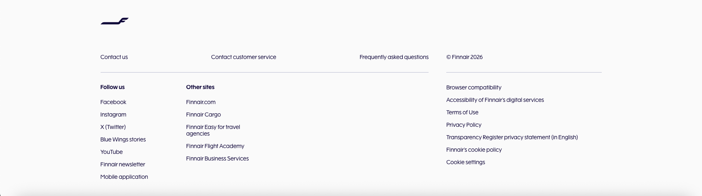

Home / Reports and presentations / Bulletin
16.3.2026
Roblox has just published an update regarding the way users under with accounts set to be under the age of 16 can play. We want to let everyone know that we will still continue operations, and in this article, we will show you how to bypass these new regulations and join our flights, even if your account age is set to be under 16.
What is Happening?
On June 16th, 2026, Roblox has finally rolled out a new update which split the playerbase into 3 distinct groups: Regular, Roblox Select, and Roblox Kids. Everyone over the age of 16 can play all games on Roblox, and are on regular Roblox. People whom are ages 13-15 are in the Roblox select group, and can typically only play games which are all ages, and Roblox kids, is where everyone under the age of 13 falls into, and cannot chat with any users, even those in the same age group.
Additionally, all games are forced to comply with new regulations in order for players to be able to access games they have created. There are several requirements, however the problem that we are facing, is that in order for a game to be age verified for all users, you need to either spend a one time, 100,000 robux fee, or have 500, actively engaged 16+, age checked users play your game. Roblox has kept the term actively engaged extremley vague, however the general consensus is that you need a player who has spent robux within the last 60 days for them to count as a highly enaged player. Both of these options are highly infeasible, so we have had to start looking for loopholes in the system.
Solution 1: Create an alternate account which is age checked to be 16+
If you are in the small percentage of people, who have had their account falsely age restricted by the AI face scan, we reccomend that you create an alternate account to try to trick the AI into thinking that you are aged 16+. This method requires the least amount of friction, as you only need to do it once, and then you get access to all the games on the platform. Alternatively, there is an option to rescan your face, which you can learn more here:
https://en.help.roblox.com/hc/en-us/articles/42295385001236-How-does-Roblox-estimate-my-ageSolution 2: Add a Parent Account
You can alternatively add a parent account. If your parent decides to create a parent account for you, they will need to scan a picture of their ID or a picture of their credit card. From there, you or the parent can manually add games that you would like permission to join.
Conclusion and How you can Help us Even if you are 16+
For the time being, these are the only methods for accounts aged 13-15 that allow for the joining of our games. If you are 16+ however, you can help us reach the 500 player and/or the 100 thousand robux requirement for freeing everyone from these workaround for good. If you have more questions, simply open a ticket in our Discord Server.
